The Analytics Problem
This chapter introduces the “analytics problem” — the persistent gap between investment in AI and analytics and the business value actually realized. Drawing on Weber and Zwingmann’s (2024) Augmented Analytics, it situates analytics within broader industrial revolutions, arguing that today’s transformation — driven by AI, IoT, and cloud — is both faster and more complex than any before. The chapter explains why many organizations stagnate at early maturity stages: technical tools routinely outpace culture, strategy, and people readiness. Two key frameworks anchor the solution: IPTOP (Infrastructure, People, Tools, Organization, Processes) for operational design, and SPEC (Strategy, People, Ecosystem, Culture) for strategic alignment. Together, they guide progress from data-reactive to data-fluent enterprises. Augmented analytics emerges as the bridge — embedding intelligence into workflows to empower non-experts, enhance insight delivery, and balance automation with human judgment.
Reference:
Chapters 1 and 2 from Weber, W., & Zwingmann, T. (2024). Augmented Analytics.
O’Reilly Media, Inc.
Available at: https://learning.oreilly.com/library/view/augmented-analytics/9781098151713/
The Analytics Problem
Chapters 1 and 2 from Weber and Zwingmann (2024) outline the journey of building a data-driven organization — from understanding the foundations of data acquisition, APIs, and web scraping, to progressing through the data maturity stages (Reactive → Active → Progressive → Fluent) by aligning culture, strategy, people, and technology.
Historical Context: Industrial Transformations
Prior industrial revolutions unfolded in three distinct waves:
- 1760s — Steam power enabled mechanized production for the first time.
- Mid-1800s to 1910s — Electricity and mass production reshaped manufacturing and labor.
- Late 20th century onward — Computerization digitized processes across every industry.
The current shift is different in kind, not just degree. Digital transformation is driven by the simultaneous convergence of AI, IoT, cloud computing, and advanced analytics — making it both faster and more complex than any previous era.
Why Are Businesses Transforming?
Speed of change. Previous revolutions unfolded over decades; today, an industry can be disrupted within a few years. Amazon displaced local bookstores; Uber reshaped taxi markets; Industry 4.0 is redefining manufacturing. This pace demands organizational agility and strong leadership capable of making decisions under uncertainty.
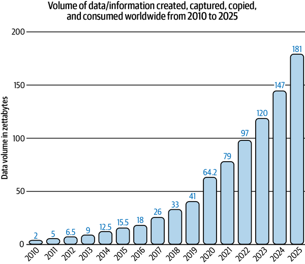
Convergence of multiple technologies. Earlier revolutions were driven by a single technology; today’s changes combine AI, cloud computing, IoT, and advanced analytics simultaneously. This creates multidimensional complexity: the disruption is not just faster — it is harder to predict and harder to respond to.
The importance of data. Data has shifted from a byproduct of operations to a core strategic asset. The “data as oil” analogy is instructive but imprecise: unlike oil, data is not consumed when used, increases in value as more of it is combined, and requires “refining” — through cleaning, integration, and governance — to become useful.
Changing consumer behavior. “iPhone moments” — sudden shifts in customer expectations triggered by a new product or platform — reshape entire industries. Shopify transformed retail; Tesla changed automotive; Netflix disrupted entertainment; Amazon Prime redefined logistics. Digital transformation now touches all sectors and is frequently initiated by rising customer expectations rather than internal strategy.
Industries Most Impacted
McKinsey research identifies the industries where big data and analytics deliver the greatest transformative potential:
| Industry | Key Applications |
|---|---|
| Agriculture | Precision farming, crop yield prediction, automation |
| Commercial insurance | Risk pricing, underwriting efficiency |
| Finance | Fraud detection, credit risk modeling, algorithmic trading |
| Healthcare | Personalized medicine, predictive diagnostics |
| IT | Automation, cybersecurity threat detection |
| Manufacturing | Predictive maintenance, supply chain optimization |
| Transportation | Route optimization, demand prediction |
| Utilities | Grid stability, renewable energy integration |
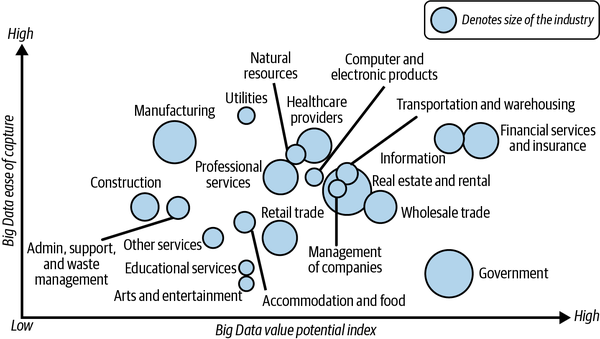
Consequences for Businesses
The shift toward customer centricity means organizations must develop deep insight into the customer journey — not just internal efficiency metrics. Yet an analytics adoption gap persists: many analytics teams fail to deliver perceived business value, and tools are frequently too technical for the average employee to use confidently.
History offers a useful lesson: widespread adoption of transformative technology consistently follows from simplicity. The graphical user interface democratized computing; the mouse made it accessible; the touchscreen extended it to billions of people. The same principle applies to analytics.
The Case for Augmented Analytics
Traditional analytics tools cannot handle the variety of today’s data — structured (databases, spreadsheets), semi-structured (JSON, logs), and unstructured (text, images, video). Manual tools like Excel or static BI dashboards are insufficient at the scale and pace modern business demands.
Augmented analytics closes this gap by bringing insights directly to non-data professionals — roughly 80% of the workforce. The goal is to make analytics intuitive, embedded in daily workflows, and immediately actionable, without requiring users to become data scientists.
Data-Driven Culture
A data-driven culture is one where decisions routinely begin with “What does the data say?” rather than relying on intuition or seniority. The current reality falls short: only approximately 24% of decision-makers report feeling confident working with data. Closing this gap requires fostering curiosity, analytical thinking, and communication skills across the organization — not just among data teams.
The People Problem and the Limits of Upskilling
Aging populations and shrinking workforces mean organizations cannot simply replace existing staff with data-savvy new hires. Upskilling — acquiring new skills or deepening existing ones to keep pace with technology — is essential, but it cannot transform every employee into a data analyst.
For individuals, upskilling maintains career competitiveness and supports role evolution. For organizations, it reduces skill gaps, improves adaptability, and strengthens resilience in fast-changing industries.
The practical solution is not to raise the floor of technical skill for everyone — it is to meet people where they are and equip them with augmented tools that make data-driven decisions accessible without requiring deep technical expertise.
From Data-Driven to Insight-Driven
A data-driven orientation focuses on collecting and analyzing data. An insight-driven orientation goes a step further: it focuses on delivering actionable, user-friendly insights to the majority of employees — not just the analytics team.
Augmented analytics is the bridge between these two states. In the authors’ analogy, it plays the role the mouse played for computing: it does not make the underlying technology simpler, but it makes the results of that technology accessible to everyone.
Developing Analytical Maturity
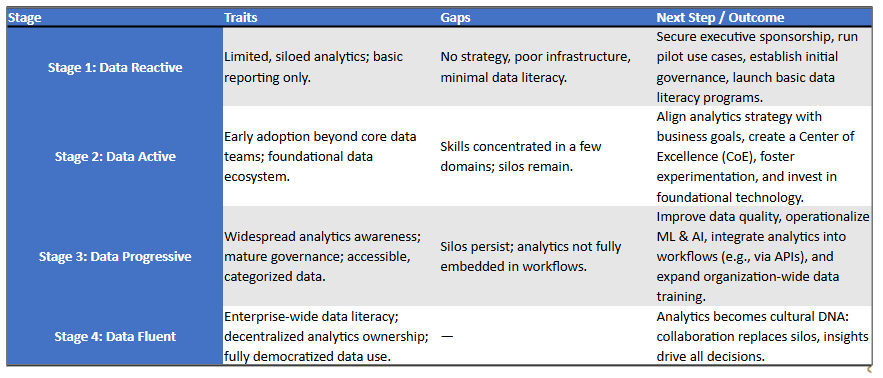
The IPTOP Framework
The IPTOP framework is operational in nature — it guides data teams on how to build and sustain analytics capabilities across five dimensions:
- Infrastructure — how data is collected, stored, made reliable, and made accessible. This includes cloud platforms, data pipelines, and data warehouses.
- People — cultivating data literacy, a data-driven culture, and ongoing learning across all roles.
- Tools — the analytics platforms and software used at various skill levels, plus reusable templates and frameworks.
- Organization — structuring data talent through centralized, decentralized, or hybrid models to enable scalable, sustainable analytics.
- Processes — workflows and governance practices that support collaboration, consistency, and alignment with business goals.
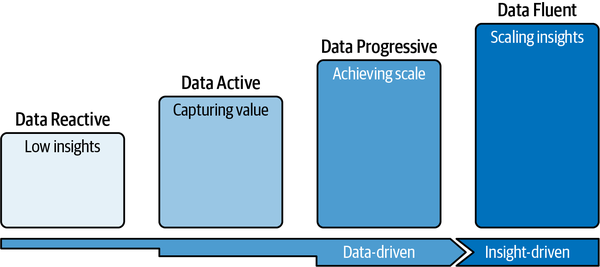
Combining IPTOP and Data Maturity
The diagram below shows how IPTOP capabilities map onto each stage of the maturity journey — illustrating which operational investments are most critical at each level.

The SPEC Framework for Transformation
While IPTOP answers how to build analytics capability, the SPEC framework answers why and who drives it. SPEC is strategic in nature — it helps executives align analytics with business vision and culture:
- Strategy — define a clear analytics vision aligned with business objectives. Analytics without strategic alignment produces activity, not value.
- People & Organization — build data talent across roles, bridge the gap between business and analytics teams, and promote continuous learning.
- Data Ecosystem — establish reliable, secure, and accessible data infrastructure underpinned by sound governance.
- Cultural Change — foster the collaboration, experimentation, and data-driven mindsets that make analytics stick at the organizational level.
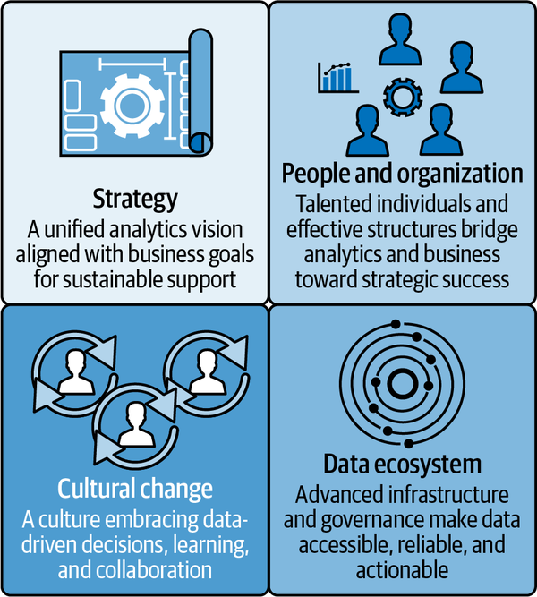
Becoming Data Active
Moving from Data Reactive to Data Active requires coordinated progress across all four SPEC dimensions:
- Culture — secure visible CEO support and gain buy-in from middle management; without this, analytics initiatives stall.
- Strategy — develop a data strategy that explicitly connects analytics priorities to the organization’s business purpose.
- People & Organization — raise awareness of data literacy as a necessary competency across the workforce, not just within the data team.
- Data Ecosystem — establish initial governance (clear rules, data ownership, and access processes) and focus analytics effort on specific, high-value use cases rather than broad abstract projects.

Moving to Data Progressive
The transition from Data Active to Data Progressive deepens every dimension. Culture efforts expand to defining cross-team collaboration models, driving early adoption of analytics solutions, and democratizing access to data. Strategy crystallizes from broad intent into a documented analytics roadmap tied to business goals.
In people and organization, the organization defines its operating model, establishes a Center of Excellence, clarifies roles and personas, launches a formal data literacy program, and invests in developing internal talent for the long term. The data ecosystem work focuses on finalizing the target tool stack and setting up a structured use-case pipeline to manage analytics projects from ideation to production.
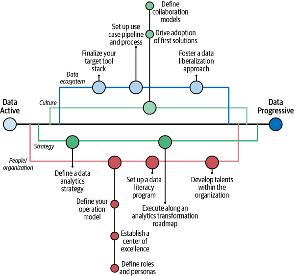
Overcoming Gulfs and Chasms
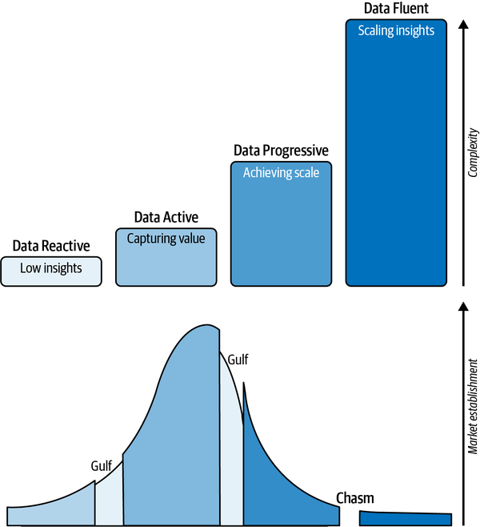
As organizations progress through maturity stages, both complexity and market establishment grow. But progress is not linear — there are key transition points where many organizations get stuck:
- Gulfs — incremental adoption hurdles within a maturity stage (e.g., building trust in a new tool, or getting a team to use a dashboard consistently).
- Chasms — the larger structural leap between stages, such as moving from isolated analytics projects to making data-driven decision-making part of the organizational DNA.
Successfully crossing each gulf and chasm requires overcoming organizational, technical, and cultural barriers simultaneously — with every stage demanding higher sophistication and broader adoption than the last.
Augmented Analytics
Chapter 3 of Weber and Zwingmann (2024) explains why augmented analytics (AA) is the critical next step for organizations that have built basic data capabilities but struggle to scale them across the business.
Reference:
Chapter 3 from Weber, W., & Zwingmann, T. (2024). Augmented Analytics.
O’Reilly Media, Inc.
Available at: https://learning.oreilly.com/library/view/augmented-analytics/9781098151713/
What Is Augmented Analytics?
Augmented analytics means adding value by providing people with access to technology that gives them the analytical leverage they need to accomplish business tasks more effectively. It offers a path to scaling insights across an organization by making them accessible, intuitive, and embedded in decision-making.
AA is not simply about better technology — it is about human-centric augmentation that finds the right sweet spot between full automation and unaided human judgment. Done well, it becomes integrated, essential, and empowering, helping organizations progress toward Data Fluent maturity.
AA matters because it breaks down the divide between data experts and business users. It embeds analytics into daily work — making data use habitual and unobtrusive — through two mechanisms:
- Augmented workflows — analytics functionality embedded directly inside existing business processes (e.g., a recommendation surfaced inside a CRM while a salesperson is entering a call note).
- Augmented frames — context-specific, just-in-time insights delivered to the user at the moment of a decision.
Five Key Components: From Data Reactive to Data Fluent
Augmented analytics rests on five interlocking components:
- People — human creativity, experience, and judgment remain at the center of analytics. Tools support people, but it is people who frame questions, interpret results, and make decisions.
- Technology — AI, automation, and analytics platforms provide the computational power to process large datasets and enable advanced analytics at scale.
- Analytical leverage — analytics amplifies human thinking by improving speed, scale, accuracy, and predictive ability — making insights more powerful than intuition alone.
- Business task — analytics should always be applied to solve real-world, value-driven business problems. Generating reports for their own sake is not the goal.
- Better way — the goal is faster, more reliable, less biased decisions — leading to better outcomes than gut instinct or legacy methods could deliver.
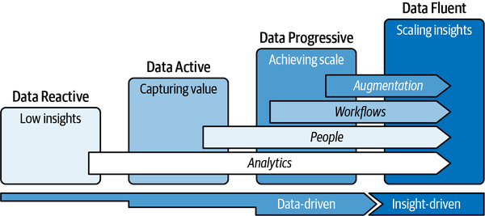
Five Traits of Effective Augmented Analytics
Weber and Zwingmann describe effective AA using five “I” traits:
- Insightful — turns raw data into actionable knowledge, not just pretty charts.
- Integrated — embedded into existing workflows and tools that employees already use.
- Invisible — works seamlessly in the background; the user receives the insight without needing to run an analysis.
- Indispensable — delivers consistent, reliable value until users cannot imagine working without it.
- Inclusive — usable by all employees, not just data experts.
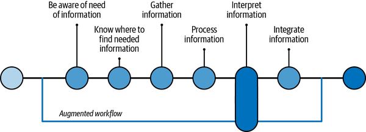
Types of Bias
Analytics practitioners must recognize the cognitive and statistical biases that can distort data, models, and decisions. Nine key types are described by Weber and Zwingmann:
- Survivorship bias — focusing only on entities that “survived” a selection process while ignoring those that did not. Example: studying only successful companies without analyzing the failed ones leads to overconfidence in the “winning” strategies.
- Confirmation bias — seeking or favoring information that confirms existing beliefs while discounting contradictory evidence. Example: a manager selects only the data points that support the decision they have already made.
- Sample bias — drawing conclusions from a dataset not representative of the full population. Example: surveying only college students to estimate national voting behavior.
- Availability bias — overestimating the likelihood of events that are easy to recall, often because they are recent or vivid. Example: overestimating the risk of plane crashes after a widely covered accident.
- Outlier bias — placing too much emphasis on unusual or extreme cases that do not represent the norm. Example: using one exceptional sales month as the basis for an annual forecast.
- Selection bias — systematic error caused by non-random data selection that skews results. Example: studying only patients who complete a treatment program, ignoring dropouts.
- Cognitive bias — a broad category covering systematic deviations from rational judgment caused by mental shortcuts. Example: stereotyping a job applicant based on limited demographic information.
- Anchoring bias — relying too heavily on the first piece of information encountered when making a decision. Example: letting a high initial salary offer anchor all subsequent negotiation.
- Historical bias — bias introduced when training data reflects outdated or inequitable historical conditions. Example: a predictive policing model that perpetuates past discriminatory arrest patterns.
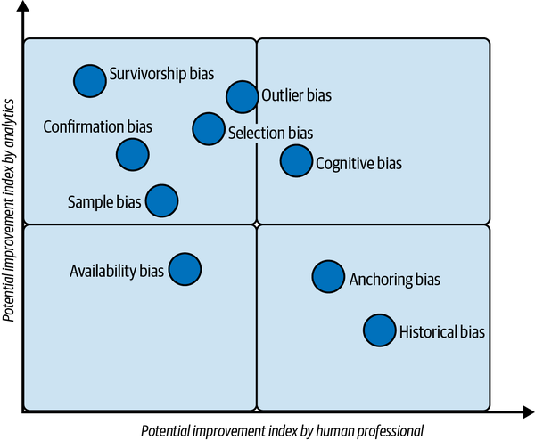
The Five AI Archetypes
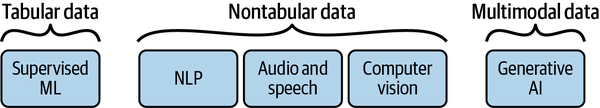
Not all AI is the same. Weber and Zwingmann identify five distinct archetypes, each suited to different business tasks:
- Automation — repeatable, deterministic processes: data preparation, scheduled reports, rule-based alerts.
- Supervised machine learning — learns from labeled examples to perform prediction, classification, anomaly detection, and recommendations.
- Natural language processing (NLP) — understands and generates human language: text analysis, search, summarization, sentiment analysis.
- Speech — converts between voice and text: voice-to-text transcription, text-to-voice synthesis.
- Computer vision — interprets visual content: document analysis, image classification, defect detection.
- Generative AI — creates new content: code generation, automated report writing, conversational interfaces.
Supervised Learning
Supervised learning is the most widely used AI archetype in business analytics. A model is trained on labeled examples (inputs paired with known outputs), then used to make predictions on new, unseen data. The workflow is iterative:
- Collect data — gather high-quality datasets with both features (inputs) and labels (known outputs).
- Define features and labels — determine which variables are predictors (features) and what is being predicted (the label/target).
- Train/test split — divide data into a training set (to learn from) and a test set (to evaluate performance on unseen data).
- Find the best model — experiment with algorithms and hyperparameters; compare performance metrics.
- Evaluate — measure accuracy, precision, recall, F1-score, or other relevant metrics on the test set.
- Deploy — integrate the trained model into a real-world application or workflow.
- Monitor — track prediction quality over time; retrain when data drift degrades performance.
This process is a loop, not a line. After monitoring, teams routinely return to earlier steps as new data arrives or business conditions change.
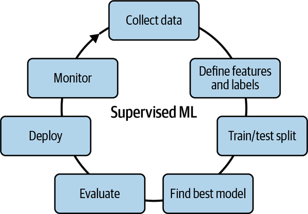